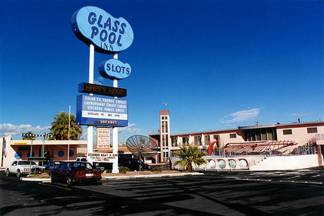
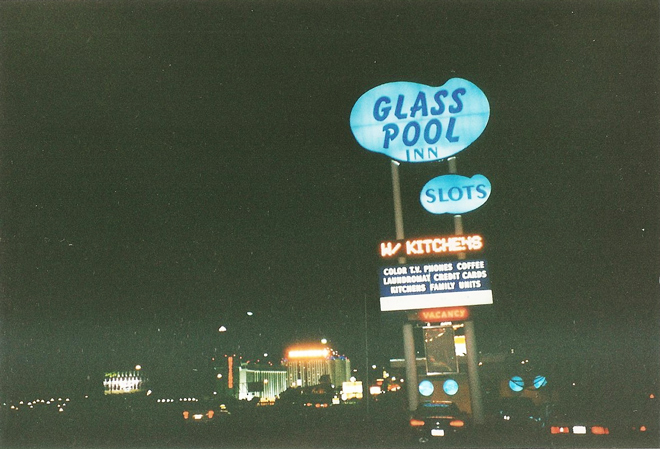
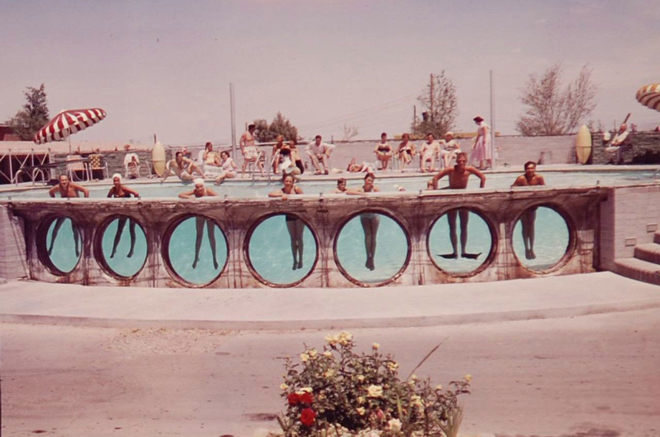
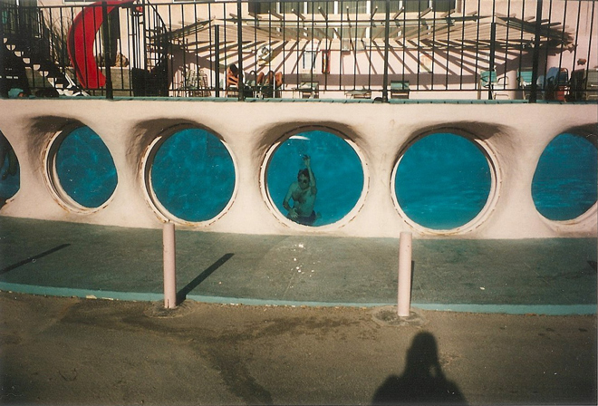
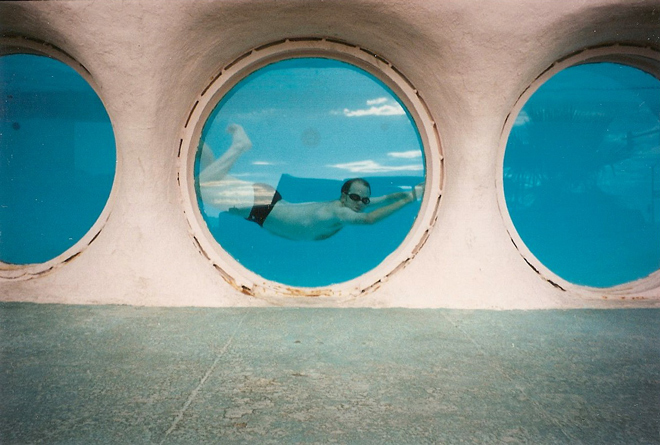
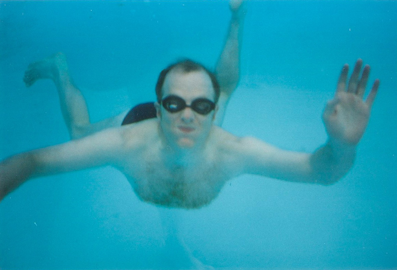
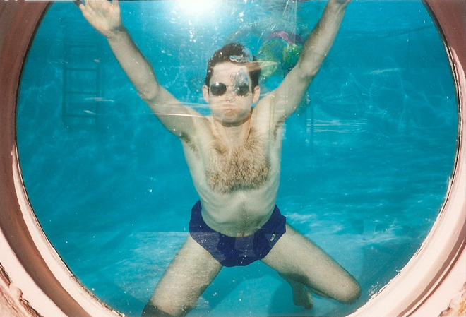
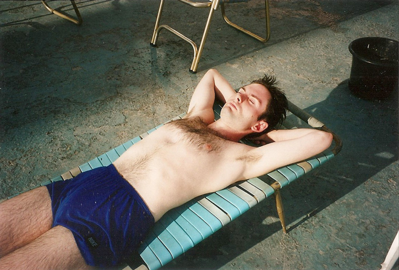
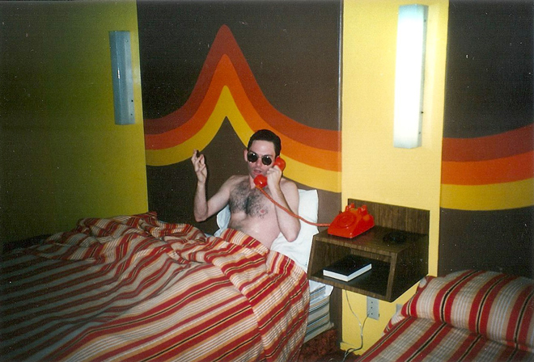
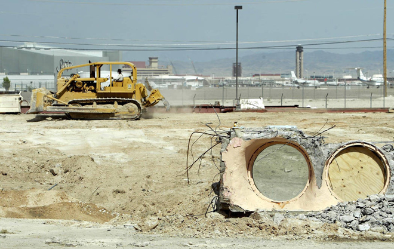

.
Back to Las Vegas where we stayed at the Glass Pool Inn. It initially opened as the Mirage Motel in 1952 with an above-ground swimming pool being added in 1955 which included large porthole windows that allowed outsiders to peer inside.
The motel became well known for its pool, which was used in numerous films and television shows including Las Vegas Shakedown (1955 - starring Dennis O'Keefe), Nightbreaker (1988 - with Martin Sheen and Emilio Estevez), Indecent Proposal (1993 - with Woody Harrelson and Demi Moore). The motel was later featured in the opening shots of Casino (1995 - dir. Martin Scorsese) and the pool was used in the 1995 film Leaving Las Vegas, in which actors Nicolas Cage and Elisabeth Shue kissed underwater for a scene.







The interior of the motel was just as outlandish. Our room looked just like a 1970s disco pad.

The Glass Pool Inn was closed in September 2003, and demolished a year later ...
